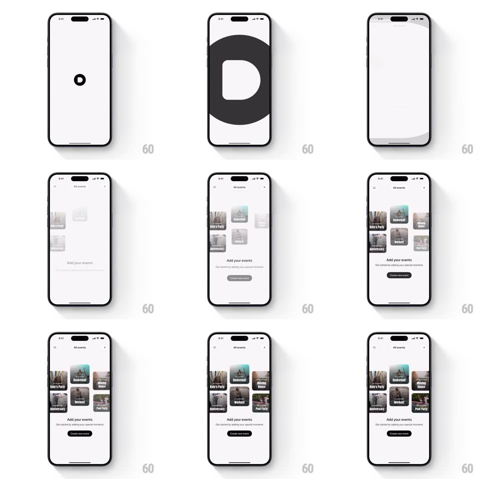

Media
Frame-by-frame

Rebuild this interaction 1:1: the Days splash - the "D" logo scales down and fades on white, briefly inverting to a giant dark "D" fill, then the All events screen fades in as a 2-column grid of event cards (Kate's Party, Basketball, Anniversary, Workout, Movie Night, Pool Party) staggers into place over "Add your events".

Rebuild this interaction 1:1: the Days splash - the "D" logo scales down and fades on white, briefly inverting to a giant dark "D" fill, then the All events screen fades in as a 2-column grid of event cards (Kate's Party, Basketball, Anniversary, Workout, Movie Night, Pool Party) staggers into place over "Add your events". ## Integration Integration: stack-agnostic spec - springs given as stiffness/damping, timed motions as duration + curve; map every value to your framework and animation library of choice. ## Scene White splash with the black "D"; a transitional giant "D" crop (dark fill); the All events grid screen with "Add your events" heading, subline, and "Create new event" button. ## Motion spec Pattern: logo shrink-out with a grid stagger-in. - The "D" scales down (1 -> 0.85) and fades (400ms), passing through a brief giant dark "D" flash (150ms) that covers the screen before clearing. - The All events screen fades in (250ms); the event cards stagger in row by row (each 90ms apart, 16px rise + fade, 300ms). - The heading, subline, and CTA fade in last (250ms). ## Calibration - The dark "D" flash is a deliberate inversion beat, not a glitch - one quick pulse. - Cards fade with their photos; no separate image load-in. ## Reduced motion Splash crossfades directly to the fully-formed grid (250ms). ## Don't miss - The grid cards show real event photos with names - this is populated content, not placeholders. - The giant "D" moment uses the same glyph as the small logo - continuity of mark.